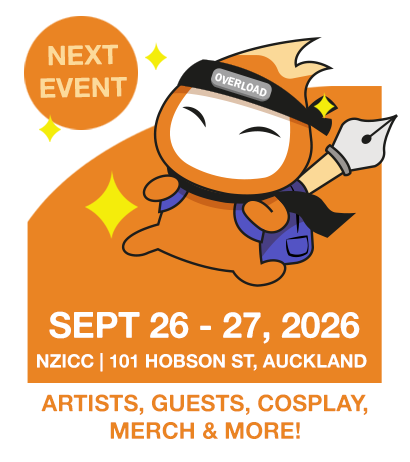
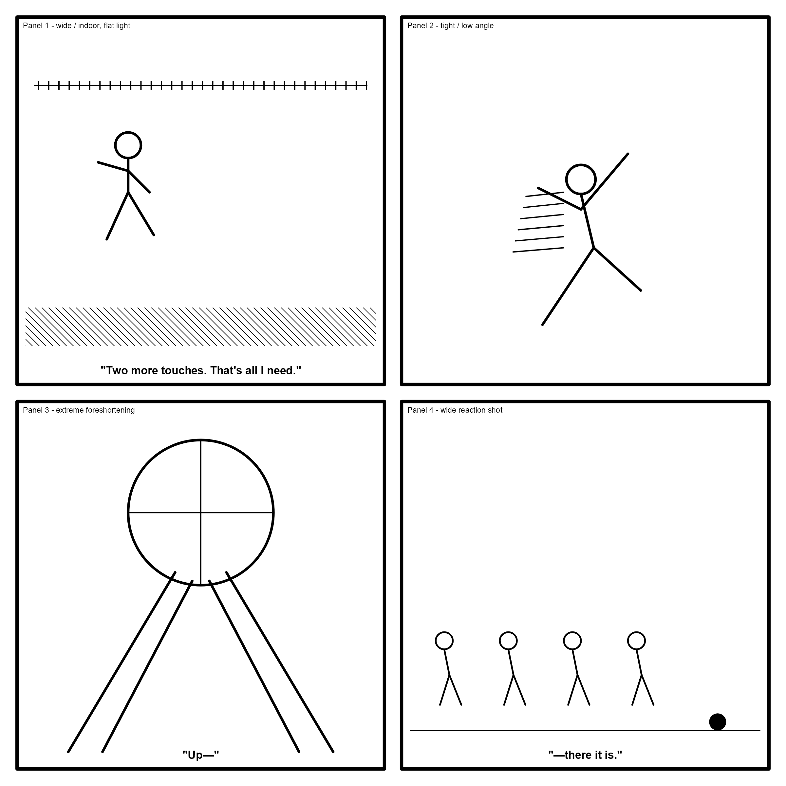

bubble-tea-news-editor skill. First appearance of
Hayaku (hayaku-senkotsu-strip), the paper's new syndicated
four-panel manga strip, which now alternates biweekly with The Boba Side in the cartoon slot
per house policy — Boba Side sat out this issue after running every issue through Issue 8,
and returns next issue in its new crayon-scribble Far Side homage. No Menace Watch this issue
— ran Issue 7, not due again until roughly Issue 11.
Technology · Product
"We re-engineered the click. Fourteen milliseconds shorter, and it's a different pitch entirely — a full semitone higher. This isn't a lid. This is confirmation."
Politics · Dispatch
"The council will tell you the footpath resurfacing is on schedule. I have found, in my experience, that anything described as 'on schedule' by the people who set the schedule deserves a second look."
Music · Review
On "Low Tide, Late" by Marion Vale: no hook chasing you down, no chorus performing a certainty it hasn't earned. Just a voice that's clearly lived through the thing it's singing about, unhurried enough to let the silence between verses actually mean something.
Bubble Tea Trivia · Did You Know?
Classic tapioca pearls are cooked starch; "popping boba" is a completely different technology — a thin gel skin formed by dripping fruit juice into a calcium bath, the same spherification trick used in cocktail garnishes, repurposed for a straw.
"Nine points, clean. That's the part she never understood."— Sherman McCoy, on knowing exactly when to let go
Joke of the Week
Why did the bubble tea file a police report? It got mugged.

26–27 Sept · NZ International Convention Centre. Tickets: overload.co.nz — about two weeks out now.
Sport · Recap (illustrative)
Runner "K. Emerson" led the whole back straight, comfortable, textbook — until his arm carriage tightened up a half-stride early, the tell of a pace he hadn't actually banked for. I'd seen it a full turn back. Everyone else saw it at the line.
Markets · The Pearl Index
Fielded against n=380 this fortnight: on days with rain before 9am, average order size is up 11% (±3.9% MOE). Whether that's comfort-drinking or just more people already indoors near a counter, the data cannot say — and I'd be lying if I claimed I wasn't personally a contributing data point three times this week.
Puzzle of the Week
Last week's Correlation Desk, resolved: with Kelburn ruled out of first and Birchfield needing to sit immediately above Ashgrove, only one order survives — Birchfield first, Ashgrove second, Kelburn third.
Three regulars' loyalty cards, checked at closing:
Brisk warm-up · which drink does Rowan actually order? Answer next week — Ken Endo
"You don't test-drive this lot. You qualify for it." — Lewis Hamilton
Zero-deposit finance, this week only.
In Memoriam
It lived a full seven weeks in a wallet, dutifully stamped, one square shy of a free drink, before its owner switched allegiances to a shop two doors down over a shorter queue. I am told this happens constantly and nobody mourns it. I mourn it. Someone must. Filed, alongside the free drink that will now never be redeemed.
Ask the Captain
"I've been getting coffee at the same café for months hoping to work up the nerve to ask the barista out. Any advice?" Adrift near the counter, ye've been circlin' the same buoy for months — a ship that only ever passes by never gets boarded. Order somethin' different next time, and ask a question that isn't about the menu. Fair winds.
chanui.com
Hayaku · Debut
